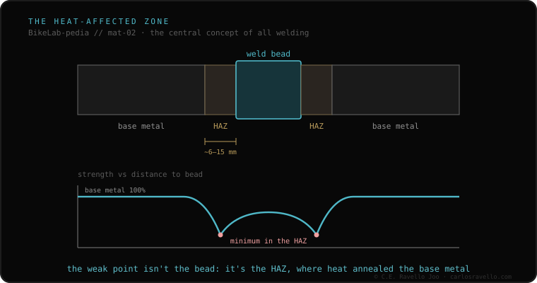

When you weld a tube, the metal does not change only in the bead. Around it there is a band —the heat-affected zone (HAZ)— where the material reached a temperature high enough to alter its properties without melting. That band is almost always where the joint's behavior is decided. That is why a frame sometimes breaks a few millimeters NEXT TO the weld, not in the bead: the HAZ is the weak point. How much it weakens and whether it recovers depends on the material.
It is the concept everything else hangs from when we talk about welding a frame. Understanding it changes how you read a fracture.
The bead is the part that melted and re-solidified. But heat does not stop at the edge of the bead: it spreads into the base metal and creates a gradient. Right beside it lies a band —a few millimeters wide— that never melted but did reach high temperatures. That pass through heat reorders the metal's internal structure: it anneals it, softens it, or changes its properties, depending on what it is made of. That band is the heat-affected zone. You cannot see it with the naked eye, but it is where the weakness concentrates.
Hence the practical fact that most surprises anyone who breaks a frame: the fracture does not appear in the bead but next to it. The bead, freshly melted and re-solidified, is often stronger than the annealed band around it. When the joint gives, it gives at the weakest link, and that link is the HAZ.
What happens in the HAZ is not universal: it depends on the material. Aluminum 6061 loses its temper there and, to recover it, needs to go through an oven. 7005 recovers in air, on its own, over time. Steel and titanium behave differently still. There is no single answer to "how much does the HAZ weaken?": the answer starts by asking what the frame is made of.

The HAZ is the gateway to the rest of the cluster. How much it weakens and whether it recovers depends on the alloy: that is where aluminum 6061 vs 7005 comes in. And because the weakened band is where damage accumulates with use, it connects directly to the conversation with whoever will weld —if the material demands it, restoring the HAZ is one of the steps worth asking about—.
If you see a mark near a weld and aren't sure what you are looking at, send us the case. We give you the language to understand it, with nothing to sell. Message us on WhatsApp
It is the band of metal surrounding a weld bead. It does not melt, but it reaches a temperature high enough to alter its properties. That band is almost always where the joint's behavior is decided, which is why it tends to be the weak point.
Because the weakest point is not the bead but the HAZ: the band a few millimeters wide next to the bead where heat altered the base metal without melting it. That is why many fractures appear millimeters next to the weld.
It depends on the material. Aluminum 6061 loses its temper there and needs an oven; 7005 recovers in air over time; steel and titanium behave differently. There is no single answer: it depends on what the frame is made of.